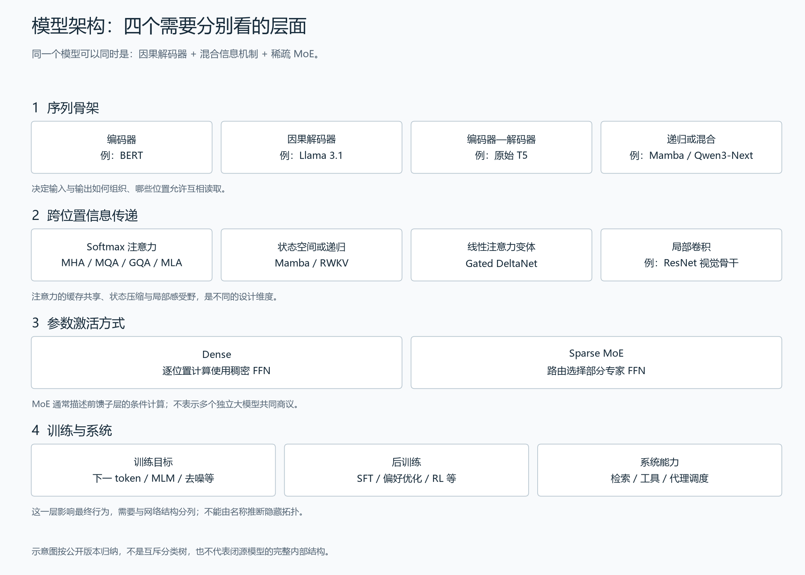

各类模型的底层架构调查
资料核对日期：2026-11-05｜以原论文、开发者模型卡、官方配置和参考实现为依据
它们不是31个都处于同一层级的完整大模型：包含指定模型版本、基础网络和注意力组件。范围以语言/多模态基础模型为主，并纳入代表性递归、视觉和扩散路线。这是一份有版本边界的架构抽样，不是全世界所有模型名录，也不声称每个条目都是2026年最新产品。
先把架构放在正确层面
“Transformer”“MoE”“强化学习”“推理模型”“RAG”分别可能指网络骨干、参数激活、训练方式、行为定位和系统组织。比较底层架构，需要把这些层面展开。同一模型可同时具备多项特征。


主要架构路线
| 架构路线 | 本次代表 | 信息怎样传递 | 需要分清 |
|---|---|---|---|
| 编码器 Transformer | BERT（原始版本） | 双向读取输入，在上下文中更新各位置表示；常接分类、标注或其他任务头。 | 原始BERT使用MLM和NSP训练；训练目标与编码器结构分别记录。 |
| 因果解码器 Transformer | Llama 3.1、Qwen3、Mistral、DeepSeek-V3等具体版本 | 每个位置读取其允许的前文，多层更新表示后预测后续token。 | 自回归是输出组织；Dense/MoE、GQA/MLA可进一步细分。 |
| 编码器—解码器 | 原始Transformer、原始T5 | 编码输入，再用因果解码器通过交叉注意力读取编码结果。 | 不是简单地把输入和输出都叫成‘理解层’。 |
| 递归 / 选择性SSM | LSTM、GRU、Mamba-1/2、RWKV-7 | 按机制维护和更新状态；不同模型的状态形状与更新方程不同。 | 固定宽度下的状态成本较稳定，不等于无损保存任意长历史。 |
| Retention / 线性注意力及混合 | RetNet、Gated DeltaNet、Qwen3-Next | 以可递归的聚合/更新处理历史；混合模型再插入全注意力层。 | 不同线性机制并不相同，也不能直接等同softmax注意力。 |
| 卷积与视觉Transformer | ResNet、CLIP视觉分支中的ResNet或ViT | 卷积逐级聚合局部视觉特征；ViT将图像patch组织为token进行注意力交互。 | CNN、ViT是骨干，CLIP的图文对比目标是另一层设计。 |
| 潜空间扩散与DiT | LDM/Stable Diffusion v1、DiT论文模型 | 在去噪/生成过程中反复调用网络；LDM可用U-Net，DiT用Transformer骨干。 | 扩散描述生成建模/采样路线，不能与Transformer当作完全互斥类别。 |
此表是对下列来源卡的综合归纳，不给各路线附加未经测量的“理解分数”。
模型与组件总表
点击名称查看版本、组件、未知项和实际阅读范围；来源链接打开原始资料。
| 模型 / 组件 | 精确版本 | 公开结构摘要 | 核对出处 |
|---|---|---|---|
| 原始 Transformer | 2017论文 base；读取arXiv v7架构节 | 编码器—解码器：输入经双向自注意力编码，输出经因果自注意力与编码器交叉注意力逐词生成。 | Attention Is All You Need |
| ResNet-18/34/50 | 2015首稿/2016 CVPR 原始ImageNet网络 | 卷积特征提取与残差捷径相加，逐级构造图像特征，再经全局平均池化与分类层。 | Deep Residual Learning for Image Recognition |
| Multi-Query Attention（MQA） | Shazeer 2019 原始机制 | 保留多个查询头，但让各查询头共享一组K和V，减少自回归解码需要加载的KV缓存。 | Fast Transformer Decoding: One Write-Head is All You Need |
| Grouped-Query Attention（GQA） | Ainslie等2023；论文使用T5.1.1检查点 | 把查询头分组，每组共享一组K/V；在MHA与MQA之间调节KV缓存大小和表示能力。 | GQA: Training Generalized Multi-Query Transformer Models from Multi-Head Checkpoints |
| Meta Llama 3.1 8B Instruct | meta-llama/Llama-3.1-8B-Instruct；2024-07原始3.1版本，不含3.2/3.3 | 稠密、decoder-only自回归Transformer；GQA、SwiGLU、pre-RMSNorm与缩放RoPE。 | Introducing Llama 3.1 Meta llama-models sku_list.py Meta Llama3/3.1参考实现 |
| Llama 4 Scout 17B-16E Instruct | meta-llama/Llama-4-Scout-17B-16E-Instruct；2025-04发布 | 自回归MoE语言骨干，文本与视觉token早期融合；使用iRoPE设计。Scout的精确层级超参有本次访问缺口，不套用Maverick示例。 | Llama4官方模型卡 The Llama4 herd官方发布文 Llama4公开model.py Llama4公开moe.py |
| Qwen3-8B | Qwen/Qwen3-8B；2025-04首次发布版本，非Qwen3-Next或2507更新 | 稠密decoder-only Transformer，GQA+QK-Norm、pre-RMSNorm、SwiGLU、RoPE；thinking/non-thinking是此模型中的运行/后训练能力，不代表两套骨干。 | Qwen3官方发布博客 Qwen3 Technical Report Qwen3-8B官方模型卡 Qwen3-8B config.json |
| Qwen3-Next-80B-A3B-Instruct | Qwen/Qwen3-Next-80B-A3B-Instruct；2025-09首版，非Thinking、非Qwen3.5/3.8 | 因果混合骨干：3层Gated DeltaNet线性注意力配1层门控全注意力，所有这些模块后接高稀疏MoE；不是普通全softmax Transformer，也不直接等同于Mamba。 | Qwen3-Next官方模型卡 Qwen3-Next config.json Qwen官方仓库历史News Qwen/HF Qwen3Next实现v4.57.0 |
| DeepSeek-V3 | deepseek-ai/DeepSeek-V3；2024-12原始V3，不含0324/V3.1/V3.2 | decoder-only Transformer，MLA低秩KV潜变量压缩+DeepSeekMoE；前3层为dense FFN，之后为MoE；MTP属于其训练/额外预测设计。 | Introducing DeepSeek-V3 DeepSeek-V3 Technical Report DeepSeek-V3 config.json |
| DeepSeek-R1 | deepseek-ai/DeepSeek-R1；2025-01原始671B版本，非R1-0528、R1-Zero或Distill系列 | 继承DeepSeek-V3-Base的MLA+DeepSeekMoE骨干；R1主要是cold-start SFT、RL等后训练流程与权重变化，不是因为会推理就换成另一种注意力结构。 | DeepSeek历史新闻索引 DeepSeek-R1原始技术报告 DeepSeek-R1 config.json |
| Mistral-7B-v0.1 | mistralai/Mistral-7B-v0.1基础模型，非v0.2/v0.3或Instruct | 稠密decoder-only Transformer，GQA+4096滑窗注意力；RMSNorm、RoPE、SiLU门控FFN。 | Mistral7B官方公告 Mistral7B技术报告 Mistral7B-v0.1 config.json Mistral/HF参考实现v4.36.0 |
| Mixtral-8x7B-v0.1 | mistralai/Mixtral-8x7B-v0.1基础模型，非8x22B或Instruct | decoder-only Transformer，把FFN替换为8个专家、每token选2个的稀疏MoE；注意力仍共享GQA，不能把8x7B算成8套完整7B模型。 | Mixtral of experts官方公告 Mixtral of Experts技术报告 Mixtral8x7B-v0.1 config.json Mistral/HF Mixtral实现v4.36.0 |
| Gemma3-4B-IT | google/gemma-3-4b-it；2025-03首次Gemma3指令版本，非1B纯文本/12B/27B/QAT | 稠密decoder-only语言Transformer+SigLIP视觉编码器；GQA按5个局部层/1个全局层交错，加入QK-Norm，采用门控GELU FFN。 | Google Gemma3发布公告 Gemma3 Technical Report Google Gemma PyTorch config Google Gemma PyTorch model |
| Phi-4 | microsoft/phi-4；原始14B文本模型，非Phi4-mini/multimodal/reasoning | 稠密decoder-only Transformer；与Phi3-medium接近，采用全注意力、GQA、RoPE、RMSNorm和SiLU门控MLP。推理能力提升主要由数据/训练改进解释，不能只凭名称判断骨干全新。 | Phi4官方模型卡 Phi4 Technical Report Phi4 config.json Microsoft/HF Phi3ForCausalLM实现v4.47.0 |
| LSTM | 1997原始LSTM；另注明1999/2000 forget-gate扩展，不与现代实现混为一个版本 | 每步以当前输入和上一时刻状态更新记忆单元；1997结构用输入/输出门控制记忆通路，专门维持较稳定的误差信号。常见现代LSTM另有遗忘门。 | Long Short-Term Memory（原始期刊记录） Gers作者研究页：Learning to forget文献列表 Learning to Forget: Continual Prediction with LSTM |
| GRU | Cho等2014原始gated hidden unit；不把库中reset放置变体当成同一公式 | 用更新门和重置门控制单个隐藏向量的保留与候选值计算；无LSTM式分离的c状态。原文将它放入RNN编码器—解码器。 | Learning Phrase Representations using RNN Encoder–Decoder for Statistical Machine Translation 原始预印本及首发日期 |
| Mamba | Mamba-1；论文2312.00752v2的selective SSM/S6与同质Mamba blocks | 让离散SSM的部分参数随当前输入变化，以有限状态选择性保留或遗忘信息；用硬件感知scan计算，堆叠统一Mamba块。 | Mamba: Linear-Time Sequence Modeling with Selective State Spaces state-spaces/mamba 官方README |
| Mamba-2 / SSD | 论文2405.21060v1；纯Mamba-2与论文里的attention混合模型分开 | 把SSM写成半可分矩阵，利用块内矩阵乘与块间状态递推；Mamba-2采用SSD内核并调整块投影和归一化。 | Transformers are SSMs: Generalized Models and Efficient Algorithms Through Structured State Space Duality state-spaces/mamba 官方README Mamba-2与SSD入口 |
| RWKV-7 Goose | 2503.14456v1；明确不是RWKV-4、Eagle-5或Finch-6 | 以输入相关的对角加低秩变换更新矩阵状态，扩展delta rule的衰减、写入和替换；继承token shift和channel-mixing FFN。 | RWKV-7 Goose with Expressive Dynamic State Evolution RWKV/RWKV-LM 官方README |
| RetNet | 2307.08621v4的原始multi-scale retention；不混为2024 Gated RetNet/YOCO | 用有衰减的键值累积与query读出替代softmax自注意力；保留Transformer式pre-LN、残差与FFN外壳。 | Retentive Network: A Successor to Transformer for Large Language Models Microsoft unilm/retnet 官方README |
| Gated DeltaNet | 2412.06464v1纯Gated DeltaNet；H1/H2混合模型另标 | 结合整体遗忘门和按当前key纠错式写入；沿用Llama式token mixer+SwiGLU MLP宏结构，另有含滑窗注意力的混合变体。 | Gated Delta Networks: Improving Mamba2 with Delta Rule NVlabs/GatedDeltaNet 官方README |
| BERT | 原始BERT Base/Large；不是RoBERTa/DeBERTa或decoder-only | 全输入位置之间做双向自注意力，逐层生成上下文向量；句对分类可读CLS，任务输出头与骨干分开。 | BERT原始NAACL论文 google-research/bert 官方README BERT首次预印本记录 |
| T5 | 原始2019/2020 T5；不混入T5.1.1、Flan-T5或T5X训练框架 | 双向encoder形成输入表征；因果decoder读已生成内容并通过cross-attention读取encoder输出，将多种任务统一为文本到文本。 | Exploring the Limits of Transfer Learning with a Unified Text-to-Text Transformer Google T5 官方README T5首次预印本记录 |
| GPT-4 | GPT-4 Technical Report，所读官方PDF页脚为2023-03-27；不等同于所有GPT-4后续API快照 | 报告明确称为Transformer-style模型，以预测下一个token预训练，可接收图像和文字、输出文字；没有披露完整层级与多模态融合拓扑。 | GPT-4 Technical Report GPT-4 Model — OpenAI API |
| GPT-4o | GPT-4o System Card，2024-08-08 | 所选系统卡公开为自回归omni模型，文字、视觉、音频端到端训练，输入输出由同一神经网络处理；这不等于公开了内部每个编码器、注意力层和输出分支。 | GPT-4o System Card GPT-4o System Card — OpenAI |
| Claude 3 family | Claude 3 Opus/Sonnet/Haiku，2024发布；模型卡含2024-06-20 Claude 3.5 Sonnet补充，本文不把补充当原版结构 | 所读Claude 3官方资料确认文字/图像多模态输入和文字输出，但不足以重建底层网络。不能用其他Claude代际的架构描述、Constitutional AI或框架名称替代本代的结构披露。 | Introducing the next generation of Claude The Claude 3 Model Family: Opus, Sonnet, Haiku |
| Gemini 1.5 Pro / Gemini 1.5 Flash | 官方Gemini 1.5技术报告中更新的Pro与Flash；正文比较February与May2024版本；不是只含最初Pro的早期稿 | 同一家族包含不同骨干配置：Pro明确为稀疏MoE Transformer；Flash明确为dense Transformer，并由Pro在线蒸馏。不能把整个1.5家族统一填为MoE。 | Gemini 1.5: Unlocking multimodal understanding across millions of tokens of context Gemini 1.5 arXiv record |
| Gemini 2.5 Pro / Gemini 2.5 Flash | Gemini 2.5官方技术报告第2.1节；不将文中2.0成员自动套用同一披露 | 报告明确称Gemini 2.5模型为原生支持文字、视觉和音频输入的稀疏MoE Transformer，token经学习路由激活部分专家参数。thinking budget属于推理计算/行为控制的披露，不能据此另画一种网络骨干。 | Gemini 2.5: Pushing the Frontier with Advanced Reasoning, Multimodality, Long Context, and Next Generation Agentic Capabilities Gemini 2.5 arXiv record |
| CLIP（含ViT视觉分支） | OpenAI CLIP原始2021论文；ViT结构参照原始2020/ICLR2021论文，不外推后续OpenCLIP/SigLIP | 图像编码器与文字编码器分别产生向量，经线性投影与归一化进入同一嵌入空间，用对称对比目标对齐。视觉分支可用改造ResNet或ViT；CLIP并不全部等于ViT，也不是自回归对话LLM。 | Learning Transferable Visual Models From Natural Language Supervision CLIP: Connecting text and images An Image is Worth 16x16 Words: Transformers for Image Recognition at Scale |
| Latent Diffusion / Stable Diffusion v1 | LDM原论文与CompVis Stable Diffusion v1配置分别核实；不外推SDXL/SD3 | 先由图像自编码器压缩到潜空间，在带噪潜变量上用U-Net去噪，再由解码器还原图像；文字条件通过编码器及cross-attention注入。SD v1具体采用冻结的CLIP文字分支，不能把原LDM论文自训文字编码器与SD v1完全混同。 | High-Resolution Image Synthesis with Latent Diffusion Models CompVis Stable Diffusion README Stable Diffusion v1 Model Card CompVis v1-inference.yaml |
| DiT — Diffusion Transformer | Scalable Diffusion Models with Transformers，原始DiT论文v2；示例为DiT-XL/2 adaLN-Zero，ImageNet类别条件模型 | 仍在图像潜空间做迭代扩散去噪，用处理latent patches的Transformer替换常见U-Net。示例以扩散时间步与类别嵌入调节归一化/残差，不是把图像token按语言模型方式逐个预测。 | Scalable Diffusion Models with Transformers DiT author project page |
真正需要比较的关键机制
1. 注意力不是完整网络
在标准Transformer中，跨位置的信息交互与逐位置前馈计算交替进行，旁边还有残差、归一化和位置信息。原始模型采用编码器—解码器；现代具体模型可采用不同堆叠和组件。原始 Transformer §3。
2. MHA / MQA / GQA / MLA 改变的内容不同
MHA为各头使用各自K/V；MQA让查询头共享一组K/V；GQA按查询组共享K/V。它们都可以保留多个查询头。MLA在DeepSeek-V3等指定版本中采用低秩潜在表示压缩K/V相关信息，并处理位置项；不能把它说成简单的“更少KV头”。GQA §2；MLA细节见DeepSeek-V3证据卡。
3. Dense 与 MoE
稠密模型与稀疏MoE的差别之一，是每个token的前馈计算是否通过路由激活部分专家。专家是可训练的子网络，并不天然对应人类命名的语义领域。总参数、单token激活参数、专家数和top-k必须按版本分别核对；激活参数也不能直接当作端到端速度或内存占用。见Mixtral、DeepSeek-V3、Qwen3-Next和Llama4 Scout卡。
4. 递归状态、SSM、线性注意力及混合
LSTM/GRU维护门控状态；Mamba采用输入相关的选择性状态空间机制；RWKV-7、RetNet、Gated DeltaNet又有各自更新形式。它们不能仅因“可递归”就合并成同一算法。混合模型可交替使用线性状态更新和全注意力。若宽度、状态维与层数固定，部分机制在递归生成时可保持相对输入长度恒定的状态规模，但状态压缩并不保证无损记忆任意历史。
5. 复杂度要带条件
标准全局softmax注意力的跨token乘法随长度n含二次项；FFN和投影还有其他成本。MQA/GQA主要减少KV头缓存，并没有消除所有两两交互。FlashAttention等内核优化可减少实际内存流量，不能据此把全局注意力的算术成本自动写成线性。不同结构的真实速度还取决于长度、批量、硬件、精度、实现与并行方式。本次没有做性能实测。
这些结构与“理解问题”有什么关系
架构提供信息处理的方式；是否形成了可用的问题含义，需要另外提供行为或表征证据。这里的判断是本次研究的分析原则，不是任何一篇架构论文已经证明的统一理解定理。
- 编码器能让各输入位置在上下文中互相更新，因此适合研究单个问题的表征；能输出向量还不足以确认关系方向、否定范围、指代与询问目标都已掌握。
- 因果解码器也能在训练后处理整段已给问题并产生解释。因果掩码规定计算依赖，并不直接等于“只能看局部”或“不能理解”。
- SSM/递归路线需要观察哪些语义信息被状态保留、何时被覆盖；MoE路线需要观察路由和专家计算实际贡献，不能把路由热图等同语义解释。
- 需要区分骨干、训练数据、优化、任务定义和评测。先前小型实验的失败不能由本次文献调查改写为成功，也不能单凭那个失败推断所有自注意力架构都不可能理解。
对后续“单纯理解问题”的研究，本资料可用于选择和比较骨干，测试内容仍应围绕问题本身：问什么、涉及谁和什么关系、条件与否定如何约束含义、改写后哪些应保持或改变。本轮只搜集与整理资料，没有执行新的训练、推理或检索链实验。
逐项版本与证据卡
原始 Transformer · 2017论文 base；读取arXiv v7架构节
发表时间：2017-06-12（首稿）；2017 NeurIPS
编码器—解码器：输入经双向自注意力编码，输出经因果自注意力与编码器交叉注意力逐词生成。
组件
- 输入/输出嵌入与正弦位置编码
- 多头缩放点积注意力
- 逐位置ReLU前馈网络
- 残差连接与Post-LayerNorm
- 线性输出与softmax
已核到的细节
- 原始base为6层编码器、6层解码器，隐藏维512、8头、FFN维2048。
- 编码器可读完整输入；解码器自注意力有因果掩码，另有读取编码结果的交叉注意力。
未知项与适用边界
- 这些配置仅对应原始base，不能迁移为所有Transformer或现代LLM的配置。
- 该结构本身没有给出理解问题的充要条件。
原始来源与实际阅读范围
- Attention Is All You Need
实际读取摘要、§1–3.5及§4表1，重点核对编码器/解码器、MHA、FFN、位置编码公式和复杂度限定；未复现论文实验。
ResNet-18/34/50 · 2015首稿/2016 CVPR 原始ImageNet网络
发表时间：2015-12-10（首稿）；2016 CVPR
卷积特征提取与残差捷径相加，逐级构造图像特征，再经全局平均池化与分类层。
组件
- 卷积、BatchNorm、ReLU
- 残差加法 y=F(x)+x 或维度匹配投影
- 空间下采样
- 全局平均池化与分类头
已核到的细节
- 原始18/34层使用两层3×3基本块；50层使用1×1、3×3、1×1瓶颈块。
- 残差连接是连接结构，卷积是信息混合操作；二者不能当成互斥架构。
未知项与适用边界
- 这里是原始ResNet，不能套用后续pre-activation或其他改版的细节。
- 图像分类结构不直接构成语言问题理解器。
原始来源与实际阅读范围
- Deep Residual Learning for Image Recognition
实际读取摘要、§1、§3.1–3.4、表1及相关基本块描述；CVF PDF访问403后改读作者arXiv原稿。
Multi-Query Attention（MQA） · Shazeer 2019 原始机制
发表时间：2019-11-06
保留多个查询头，但让各查询头共享一组K和V，减少自回归解码需要加载的KV缓存。
组件
- 多查询投影
- 共享K/V投影
- 各查询头的softmax注意力
- 输出投影
已核到的细节
- 共享K/V不等于只剩一个注意力输出头。
- 原论文主要针对增量解码的内存带宽；不把论文的速度结论外推为任意硬件、长度和任务的固定倍数。
未知项与适用边界
- 它是可装入Transformer的组件，不是一个完整训练好的语言模型。
- 减少KV头并不消除全局softmax注意力的所有token两两交互。
原始来源与实际阅读范围
- Fast Transformer Decoding: One Write-Head is All You Need
实际读取摘要、§2的多头/增量解码说明、§3 MQA算法及性能分析；arXiv HTML失败后读取PDF。
Grouped-Query Attention（GQA） · Ainslie等2023；论文使用T5.1.1检查点
发表时间：2023-05-22（arXiv首稿）；2023-12 EMNLP
把查询头分组，每组共享一组K/V；在MHA与MQA之间调节KV缓存大小和表示能力。
组件
- H个查询头
- G组K/V头
- 分组softmax注意力
- 转换检查点后继续预训练的适配方案
已核到的细节
- G=1等于MQA，G=H等于MHA。
- 原实验将GQA用于解码器自注意力及交叉注意力，编码器保留MHA。
- 这里的继续预训练是适配方法；GQA本身是K/V共享结构。
未知项与适用边界
- 原论文的分组数与效果不代表所有使用GQA的模型。
- 结构变更后的语义能力需要独立测试，不能由缓存节省推出。
原始来源与实际阅读范围
- GQA: Training Generalized Multi-Query Transformer Models from Multi-Head Checkpoints
实际读取摘要、§1–3.1、图2及主实验/分组说明，核对GQA/MQA/MHA边界；未复现实验。
Meta Llama 3.1 8B Instruct · meta-llama/Llama-3.1-8B-Instruct；2024-07原始3.1版本，不含3.2/3.3
发表时间：2024-07-23
稠密、decoder-only自回归Transformer；GQA、SwiGLU、pre-RMSNorm与缩放RoPE。
组件
- backbone: causal decoder-only Transformer
- parameterization: dense
- token_mixer: softmax self-attention with GQA
- position: scaled RoPE；本版本use_scaled_rope=true
- normalization: pre-RMSNorm，末尾RMSNorm
- ffn: SwiGLU：SiLU门控乘法+下投影
- modalities: 文本输入、文本输出
已核到的细节
- nominal_parameters: 8B
- layers: 32
- hidden_size: 4096
- query_heads: 32
- kv_heads: 8
- norm_eps: 1e-05
- rope_theta: 500000
- evidence_binding: 层数/维度/头数来自Meta sku_list.py中llama3_1_8b；算子来自Meta llama3参考实现，不凭相邻型号猜测。
未知项与适用边界
- HF config在本次工具读取中不可访问，未下载权重核验张量；未用该失败推断模型未公开。
- 所列参考实现并非Meta线上服务完整推理系统。
原始来源与实际阅读范围
- Introducing Llama 3.1
实际检索官方发布日期和模型架构/系列介绍。 - Meta llama-models sku_list.py
实际读取llama3_1_8b对应arch_args，避免使用Llama3或70B条目的值。 - Meta Llama3/3.1参考实现
实际读取RMSNorm、RoPE缩放、attention和FeedForward/TransformerBlock。
Llama 4 Scout 17B-16E Instruct · meta-llama/Llama-4-Scout-17B-16E-Instruct；2025-04发布
发表时间：2025-04-05
自回归MoE语言骨干，文本与视觉token早期融合；使用iRoPE设计。Scout的精确层级超参有本次访问缺口，不套用Maverick示例。
组件
- backbone: 自回归Transformer语言骨干+视觉编码器
- parameterization: MoE；模型卡称16 experts
- token_mixer: 公开参考Attention为scaled dot-product并支持KV头共享；本次未读取到Scout具体Q/KV头配置
- position: iRoPE：大部分层用RoPE，穿插不使用位置编码的attention层；官方同时描述长上下文attention温度缩放
- normalization: 公开Llama4实现采用RMSNorm；QK归一化按配置和层型控制
- ffn: 公开MoE实现为SwiGLU专家及shared-expert路径；Scout具体MoE/dense层排列本次未核定
- modalities: 文本/图像输入，文本输出；视觉编码器基于MetaCLIP，early fusion
已核到的细节
- total_parameters_reported: 109B
- active_parameters_reported: 17B
- experts_reported: 16
- query_heads: null
- kv_heads: null
- layers: null
- context_model_card: 10M tokens；为开发者声明，不是本次实测
- critical_scope: 发布文中128 routed+1 shared、dense/MoE交替的具体示例是Maverick，不据此填写Scout所有细节。
未知项与适用边界
- 本次HF config多种读取入口均不可访问，因此不填未经独立核对的Scout层数、宽度、头数、top-k或层间比例。
- 公开参考代码支持的选项不等于每个Scout层都启用；未下载权重/params.json核验。
原始来源与实际阅读范围
- Llama4官方模型卡
实际读取Model Information、参数/模态/日期表；未提交访问申请或接受许可。 - The Llama4 herd官方发布文
实际读取early fusion、MetaCLIP、iRoPE与Scout段落；区分Maverick专属示例。 - Llama4公开model.py
实际读取RMSNorm、Attention、nope_layer_interval和TransformerBlock条件分支。 - Llama4公开moe.py
实际读取SwiGLU专家、router与shared_expert；不将动态配置参数猜成Scout实值。
Qwen3-8B · Qwen/Qwen3-8B；2025-04首次发布版本，非Qwen3-Next或2507更新
发表时间：2025-04-29
稠密decoder-only Transformer，GQA+QK-Norm、pre-RMSNorm、SwiGLU、RoPE；thinking/non-thinking是此模型中的运行/后训练能力，不代表两套骨干。
组件
- backbone: causal decoder-only Transformer
- parameterization: dense
- token_mixer: GQA；去除QKV bias并加入QK-Norm
- position: RoPE；config rope_scaling=null
- normalization: pre-RMSNorm及attention中的QK-Norm
- ffn: SwiGLU
- modalities: 文本输入/输出
已核到的细节
- parameters_model_card: 8.2B total / 6.95B non-embedding
- layers: 36
- hidden_size: 4096
- intermediate_size: 12288
- query_heads: 32
- kv_heads: 8
- head_dim: 128
- rope_theta: 1000000
- config_revision_observed: b968826d9c46dd6066d109eabc6255188de91218
- context_labels: {"model_card_native":32768,"model_card_YaRN":131072,"config_max_position_embeddings":40960,"technical_report_table":"128K"}
未知项与适用边界
- model card的原生上下文、YaRN扩展、论文上下文标签与config位置上限不是同一量，未将这些数字合并成一个未经解释的上限。
- 不把该dense版本套用于同系列MoE或Qwen3-Next。
原始来源与实际阅读范围
- Qwen3官方发布博客
实际检索发布日期与dense/MoE发布清单。 - Qwen3 Technical Report
实际读取第2节架构及dense型号表，明确8B是dense。 - Qwen3-8B官方模型卡
实际读取Model Overview及参数/头数/上下文说明。 - Qwen3-8B config.json
实际打开main的resolve原始JSON，重定向披露此revision，读取全部30行配置。
Qwen3-Next-80B-A3B-Instruct · Qwen/Qwen3-Next-80B-A3B-Instruct；2025-09首版，非Thinking、非Qwen3.5/3.8
发表时间：2025-09-11
因果混合骨干：3层Gated DeltaNet线性注意力配1层门控全注意力，所有这些模块后接高稀疏MoE；不是普通全softmax Transformer，也不直接等同于Mamba。
组件
- backbone: causal hybrid linear-attention/full-attention language model
- parameterization: MoE
- token_mixer: 12×[3×Gated DeltaNet + 1×Gated Attention]，线性/全注意力3:1
- position: 全注意力的partial RoPE：head维256中64维旋转；不能笼统说所有线性层都用同样RoPE
- normalization: 模型卡披露zero-centered/weight-decayed norm；参考实现有RMSNorm及gated RMSNorm
- ffn: SiLU门控专家；512路由专家每token激活10个，加1个shared expert
- modalities: 文本输入/输出；本Instruct权重只支持non-thinking模式
已核到的细节
- parameters_reported: 80B total / 3B activated
- layers: 48
- hidden_size: 2048
- full_attention_query_heads: 16
- full_attention_kv_heads: 2
- full_attention_head_dim: 256
- linear_qk_heads: 16
- linear_value_heads: 32
- linear_head_dim: 128
- routed_experts: 512
- activated_routed_experts_per_token: 10
- shared_experts: 1
- expert_intermediate_size: 512
- config_revision_observed: 9c7f2fbe84465e40164a94cc16cd30b6999b0cc7
未知项与适用边界
- 旧Qwen3-Next GitHub main已转向更新Qwen系列；只用其历史News核日期，不将当前首页新架构当成本版证据。
- 博客页面当前动态内容不可全文读取；核心架构由具体官方HF模型卡/config交叉核对。
- 未实测MTP推理、吞吐或上下文；这些不作为本次验证结果。
原始来源与实际阅读范围
- Qwen3-Next官方模型卡
实际读取Highlights和Model Overview，包含3:1布局、头数、MoE与Instruct模式限定。 - Qwen3-Next config.json
实际读取resolve原始43行JSON，核对重定向revision。 - Qwen官方仓库历史News
仅采用实际读取到的2025-09-11历史发布记录；当前页标题已为后续系列，不用其当前架构描述。 - Qwen/HF Qwen3Next实现v4.57.0
实际读取GatedDeltaRule导入、动态cache和RMSNormGated定义；未运行代码。
DeepSeek-V3 · deepseek-ai/DeepSeek-V3；2024-12原始V3，不含0324/V3.1/V3.2
发表时间：2024-12-26
decoder-only Transformer，MLA低秩KV潜变量压缩+DeepSeekMoE；前3层为dense FFN，之后为MoE；MTP属于其训练/额外预测设计。
组件
- backbone: causal decoder-only Transformer
- parameterization: dense前3层+后续MoE FFN
- token_mixer: Multi-head Latent Attention（MLA），不是仅根据num_key_value_heads字段就应判定为普通MHA
- position: decoupled RoPE，长上下文配置使用YaRN
- normalization: RMSNorm；压缩潜变量后另加RMSNorm
- ffn: SwiGLU；256路由专家top8+1共享专家
- modalities: 文本输入/输出
已核到的细节
- parameters_reported: 671B total / 37B activated per token
- layers: 61
- hidden_size: 7168
- mla_heads: 128
- kv_compression_dim: 512
- query_compression_dim: 1536
- decoupled_rope_head_dim: 64
- dense_ffn_first_layers: 3
- routed_experts_per_moe_layer: 256
- activated_routed_experts: 8
- shared_experts: 1
- expert_intermediate_size: 2048
- mtp_depth_reported: 1
未知项与适用边界
- 当前API同名/别名的实际服务后端不由原始开放权重架构决定，本条只调查原始V3。
- MTP存在不意味着每次部署都运行MTP模块；未下载权重验证完整张量与运行路径。
原始来源与实际阅读范围
- Introducing DeepSeek-V3
实际读取2024/12/26索引、671B/37B以及原始仓库/论文链接。 - DeepSeek-V3 Technical Report
实际读取第2节MLA/DeepSeekMoE与模型超参数段，含61层、压缩维度、256/8+1专家与RMSNorm。 - DeepSeek-V3 config.json
实际读取配置字段，与技术报告交叉核对；不把main当不可变权重证明。
DeepSeek-R1 · deepseek-ai/DeepSeek-R1；2025-01原始671B版本，非R1-0528、R1-Zero或Distill系列
发表时间：2025-01-20
继承DeepSeek-V3-Base的MLA+DeepSeekMoE骨干；R1主要是cold-start SFT、RL等后训练流程与权重变化，不是因为会推理就换成另一种注意力结构。
组件
- backbone: DeepSeek-V3-Base因果Transformer骨干
- parameterization: MoE；前3层dense FFN，其后稀疏专家
- token_mixer: MLA
- position: decoupled RoPE/YaRN配置
- normalization: RMSNorm，继承V3的潜变量归一化结构
- ffn: SwiGLU；256路由专家top8+1共享
- modalities: 文本输入/输出
- post_training_distinction: 原始R1从V3-Base经cold-start、RL、采样/SFT、进一步RL得到；Distill-Qwen/Llama另有各自基础架构
已核到的细节
- parameters_reported: 671B total / 37B activated
- config_architectures: ["DeepseekV3ForCausalLM"]
- config_model_type: deepseek_v3
- layers: 61
- hidden_size: 7168
- mla_heads: 128
- kv_compression_dim: 512
- query_compression_dim: 1536
- routed_experts: 256
- activated_routed_experts: 8
- shared_experts: 1
- config_revision_observed: 56d4cbbb4d29f4355bab4b9a39ccb717a14ad5ad
未知项与适用边界
- 没有把R1-Zero的纯RL描述直接当作R1完整训练流程；原始R1含SFT阶段。
- 蒸馏版本不能统称MLA+MoE，例如Distill-Qwen/Llama保留各自学生骨干。
- 本次不核验当前API是否仍服务该原始checkpoint。
原始来源与实际阅读范围
- DeepSeek历史新闻索引
实际读取侧栏DeepSeek-R1 Release 2025/01/20；其旧详情链接当前跳到API首页，不以首页当R1架构证据。 - DeepSeek-R1原始技术报告
实际读取V3-Base来源、R1与R1-Zero训练区别及蒸馏学生基础模型段落。 - DeepSeek-R1 config.json
实际读取resolve原始JSON的architecture、MLA维度与专家字段，重定向披露此revision。
Mistral-7B-v0.1 · mistralai/Mistral-7B-v0.1基础模型，非v0.2/v0.3或Instruct
发表时间：2023-09-27
稠密decoder-only Transformer，GQA+4096滑窗注意力；RMSNorm、RoPE、SiLU门控FFN。
组件
- backbone: causal decoder-only Transformer
- parameterization: dense
- token_mixer: GQA+Sliding Window Attention（SWA）
- position: RoPE
- normalization: pre-RMSNorm
- ffn: SwiGLU式SiLU门控MLP
- modalities: 文本输入/输出
已核到的细节
- parameters_official_announcement: 7.3B
- layers: 32
- hidden_size: 4096
- intermediate_size: 14336
- query_heads: 32
- kv_heads: 8
- sliding_window: 4096
- rope_theta: 10000
- config_max_position_embeddings: 32768
未知项与适用边界
- 配置位置上限不自动表示所有长文本行为都可靠；SWA的跨层传播也不是全局逐token注意力。
- v0.1的SWA/词表/位置设置不能直接套到后续Mistral版本。
原始来源与实际阅读范围
- Mistral7B官方公告
实际读取日期、7.3B、GQA与SWA说明。 - Mistral7B技术报告
实际读取摘要、Architectural details位置及GQA/SWA说明。 - Mistral7B-v0.1 config.json
实际读取32层、32/8头、宽度、norm、RoPE与sliding_window字段。 - Mistral/HF参考实现v4.36.0
实际打开版本固定实现，读取RMSNorm/RoPE及MLP相关公开结构；未运行。
Mixtral-8x7B-v0.1 · mistralai/Mixtral-8x7B-v0.1基础模型，非8x22B或Instruct
发表时间：2023-12-11
decoder-only Transformer，把FFN替换为8个专家、每token选2个的稀疏MoE；注意力仍共享GQA，不能把8x7B算成8套完整7B模型。
组件
- backbone: causal decoder-only Transformer
- parameterization: sparse MoE FFN
- token_mixer: GQA；所读v0.1 config sliding_window=null，不从Mistral7B名称继承4096滑窗
- position: RoPE
- normalization: RMSNorm
- ffn: 每层8个SiLU门控专家，top2路由加权合并
- modalities: 文本输入/输出
已核到的细节
- parameters_official_announcement: 46.7B total / 12.9B per token
- layers: 32
- hidden_size: 4096
- expert_intermediate_size: 14336
- query_heads: 32
- kv_heads: 8
- experts_per_layer: 8
- experts_per_token: 2
- rope_theta: 1000000
- sliding_window_config: null
未知项与适用边界
- 报告将参数近似写作47B/13B，公告给46.7B/12.9B，属精度口径不同。
- 未下载权重核验路由或注意力内核；本条不据纸面规格给出实测延迟。
原始来源与实际阅读范围
- Mixtral of experts官方公告
实际读取日期、decoder-only、8选2和46.7B/12.9B。 - Mixtral of Experts技术报告
实际读取摘要与Architectural details说明；不把近似参数视作精确计数。 - Mixtral8x7B-v0.1 config.json
实际读取层数/头数/8选2/RoPE与sliding_window=null。 - Mistral/HF Mixtral实现v4.36.0
实际打开版本固定公开实现，用于参考MoE算子与归一化拓扑；未运行代码。
Gemma3-4B-IT · google/gemma-3-4b-it；2025-03首次Gemma3指令版本，非1B纯文本/12B/27B/QAT
发表时间：2025-03-12
稠密decoder-only语言Transformer+SigLIP视觉编码器；GQA按5个局部层/1个全局层交错，加入QK-Norm，采用门控GELU FFN。
组件
- backbone: dense causal decoder-only LM+vision encoder
- parameterization: dense
- token_mixer: GQA；局部滑窗与全局attention按5:1交错
- position: local/global分别使用RoPE设置；全局基础频率1M、局部10K；报告用因子8作长上下文缩放
- normalization: RMSNorm前/后归一化与QK-Norm
- ffn: Google参考GemmaMLP为GELU(tanh近似)门控乘法，不是SiLU版SwiGLU
- modalities: 文本/图像输入，文本输出；SigLIP编码器，图像表征进入语言骨干
已核到的细节
- nominal_parameters: 4B
- layers_reference_4b_config: 34
- hidden_size_reference_4b_config: 2560
- intermediate_size_reference_4b_config: 10240
- query_heads_reference_4b_config: 8
- kv_heads_reference_4b_config: 4
- head_dim_reference_4b_config: 256
- local_sliding_window: 1024
- vision_encoder_parameters_reported: 417M
未知项与适用边界
- 本次HF权重config不可访问，维度来自Google公开get_config_for_4b；未对checkpoint形状逐张量核验。
- Google参考配置的cleaned tokenizer与HF发行配置可能有词表包装差异，因此不合并报告/实现的词表数字。
- Gemma3-1B没有视觉编码器，不能从4B的多模态结构推广整个系列。
原始来源与实际阅读范围
- Google Gemma3发布公告
实际读取2025-03-12日期、模型尺寸和模态介绍。 - Gemma3 Technical Report
实际读取第2节GQA/RMSNorm/QK-Norm、5:1局部全局结构、视觉参数及长上下文段落。 - Google Gemma PyTorch config
实际读取get_config_for_4b，未使用1B/12B/27B相邻值。 - Google Gemma PyTorch model
实际读取GemmaMLP的GELU门控、RMSNorm、QK norm及attention定义；未运行。
Phi-4 · microsoft/phi-4；原始14B文本模型，非Phi4-mini/multimodal/reasoning
发表时间：2024-12-12
稠密decoder-only Transformer；与Phi3-medium接近，采用全注意力、GQA、RoPE、RMSNorm和SiLU门控MLP。推理能力提升主要由数据/训练改进解释，不能只凭名称判断骨干全新。
组件
- backbone: causal decoder-only Transformer
- parameterization: dense
- token_mixer: full causal GQA；config sliding_window=null
- position: RoPE；config rope_scaling=null
- normalization: RMSNorm
- ffn: SiLU门控MLP；配置调用Phi3ForCausalLM，参考实现将gate/up投影合并后分块
- modalities: 文本输入/输出
已核到的细节
- parameters_model_card: 14B
- layers: 40
- hidden_size: 5120
- intermediate_size: 17920
- query_heads: 40
- kv_heads: 10
- rope_theta: 250000
- config_max_position_embeddings: 16384
- config_architectures: ["Phi3ForCausalLM"]
- config_model_type: phi3
未知项与适用边界
- 类名Phi3ForCausalLM不表示权重是Phi3；应与Phi4模型卡/配置一起辨认。
- 技术报告预训练4K后扩到16K，不能将4K训练阶段误作发行模型最终上下文。
- 不将Phi4-mini或multimodal的结构套到此14B版本。
原始来源与实际阅读范围
- Phi4官方模型卡
实际读取Architecture、文本模态、16K及2024-12-12日期。 - Phi4 Technical Report
实际读取第3节decoder-only、Phi3-medium关联、full attention和4K到16K扩展说明。 - Phi4 config.json
实际读取40层、40/10头、宽度、SiLU、norm/RoPE及Phi3类名；不从类名否定模型身份。 - Microsoft/HF Phi3ForCausalLM实现v4.47.0
实际读取RMSNorm、RoPE、Phi3MLP的gate/up分块乘法；版本与所读配置声明匹配，未运行。
LSTM · 1997原始LSTM；另注明1999/2000 forget-gate扩展，不与现代实现混为一个版本
发表时间：1997-11-15；forget-gate期刊论文2000
每步以当前输入和上一时刻状态更新记忆单元；1997结构用输入/输出门控制记忆通路，专门维持较稳定的误差信号。常见现代LSTM另有遗忘门。
结构家族：门控循环网络
状态传递：固定维c和h逐token传递；门选择写入和读出。1997原结构不应直接画成包含后来遗忘门的标准三门图。
与注意力的关系：它本来是递归序列建模路线，不是从Transformer拆下注意力后自动得到；不逐token保留完整历史KV。
训练目标：网络结构不指定唯一损失；原文以人工长时距任务训练，后续语言模型可另用下一token交叉熵。
复杂度范围：固定输入/隐藏宽度时，顺序处理长度T的成本随T线性增长，推理状态不随历史长度增长；训练BPTT仍需要展开或重算中间激活。
组件
- 循环隐藏输出h
- 记忆单元c与自循环记忆路径
- 输入门、输出门
- 现代常见变体的遗忘门：来自后续扩展
已核到的细节
- 原论文明确误差衰减问题、记忆单元与门控通路。
- forget gate属于后续持续输入流扩展，不能倒记为1997原设计。
未知项与适用边界
- LSTM是架构家族，不存在唯一参数规模、分词器或语料配方。
- 本轮未重新验证长依赖或语言能力；较稳定梯度通路不等于无限精确记忆。
原始来源与实际阅读范围
- Long Short-Term Memory（原始期刊记录）
实际读出版信息、原始摘要及作者原论文索引；作者PDF字体编码损坏，未声称完整公式逐页核查。 - Gers作者研究页：Learning to forget文献列表
实际读作者页的1999会议/2000期刊条目；结合原始摘要核实遗忘门是后续扩展。 - Learning to Forget: Continual Prediction with LSTM
本轮读取该原论文摘要的公开索引和作者书目，未通读全文。
GRU · Cho等2014原始gated hidden unit；不把库中reset放置变体当成同一公式
发表时间：2014-06-03首预印本；2014-10 EMNLP
用更新门和重置门控制单个隐藏向量的保留与候选值计算；无LSTM式分离的c状态。原文将它放入RNN编码器—解码器。
结构家族：门控循环网络
状态传递：原式h_t=z_t⊙h_(t-1)+(1-z_t)⊙h候选；候选读取被r门控的前一状态。长历史压入固定维h。
与注意力的关系：原始双RNN将源序列编码为固定向量，再条件生成目标；没有Transformer式全历史softmax自注意力。
训练目标：2014论文最大化给定源短语的目标短语条件概率；GRU单元本身并不规定必须做翻译或分类。
复杂度范围：固定宽度时推理逐步递推，序列总工作量随T线性增长，状态固定；原非线性循环依赖并不因“线性T”而自动具备Transformer式整序列并行。
组件
- 更新门z
- 重置门r
- 候选隐藏值
- 前一隐藏向量h与当前输入x
已核到的细节
- 论文2.3节给出reset/update及状态公式(5)–(8)。
- 现代框架中门的命名或reset位于矩阵乘前后可能不同，复现应核对具体版本。
未知项与适用边界
- 无单一GRU模型训练规模或语言理解能力指标。
- 本轮只核查架构原文，未比较现代库实现或训练结果。
原始来源与实际阅读范围
- Learning Phrase Representations using RNN Encoder–Decoder for Statistical Machine Translation
实际读原论文2.1–2.3节、Figure2、式(5)–(8)及训练目标说明。 - 原始预印本及首发日期
实际核验题名、作者、首次提交日期。
Mamba · Mamba-1；论文2312.00752v2的selective SSM/S6与同质Mamba blocks
发表时间：2023-12-01首预印本
让离散SSM的部分参数随当前输入变化，以有限状态选择性保留或遗忘信息；用硬件感知scan计算，堆叠统一Mamba块。
结构家族：选择性状态空间模型
状态传递：h_t=A离散_t h_(t-1)+B离散_t x_t，y_t由C_t读出；各通道保留扩展SSM状态，解码还保留短卷积缓存。
与注意力的关系：原纯Mamba骨干不使用softmax注意力，也不交替保留独立Transformer FFN块；不能由此说它没有线性投影或门控非线性。
训练目标：语言实验使用自回归预训练；selective SSM是序列变换结构，不是独立语义监督损失。
复杂度范围：在宽度D与状态维N固定时scan总算术量随T线性、递归解码状态约随DN而非T增长；投影、卷积、训练激活和GPU内核常数仍需计入。
组件
- 输入/输出投影
- 短因果卷积与SiLU
- 输入相关Δ、B、C和结构化A
- selective scan、门控与残差/归一化
已核到的细节
- Algorithm2明确Δ、B、C输入相关，破坏时不变全局卷积等价。
- 官方repo公开scan、mamba_simple.py和完整LM骨干入口。
未知项与适用边界
- 有限压缩状态不保证无损保存全部上下文。
- 论文吞吐优势仅适用其硬件/形状/实现比较，不能推广为任何任务总更快更准。
- 本卡非2026最新SSM穷尽；官方repo已有Mamba-3入口，本轮不展开其机制。
原始来源与实际阅读范围
- Mamba: Linear-Time Sequence Modeling with Selective State Spaces
实际读2–3节、Algorithm2、scan/简化块设计及任务范围；未复现速度或模型。 - state-spaces/mamba 官方README
通过GitHub连接器实际读取README的Selective SSM、Mamba/Mamba2模块和LM入口；未安装或运行。
Mamba-2 / SSD · 论文2405.21060v1；纯Mamba-2与论文里的attention混合模型分开
发表时间：2024-05-31首预印本；ICML2024
把SSM写成半可分矩阵，利用块内矩阵乘与块间状态递推；Mamba-2采用SSD内核并调整块投影和归一化。
结构家族：受结构约束SSM与结构化注意力的对偶算法
状态传递：一个head的有限N×P状态随token或chunk更新；块内并行计算输出，块间传递压缩状态。模型宽度/状态维不等于上下文长度。
与注意力的关系：纯Mamba-2用SSD替代序列混合；题名中的对偶涉及特定SSM/结构化线性注意力，不是任何softmax Transformer都无条件等价于任意SSM。
训练目标：语言建模实验仍是自回归下一token训练；SSD是计算/结构选择。
复杂度范围：固定head/state/chunk尺寸时可用随T线性工作的状态算法；块内矩阵项与state大小影响成本。论文2–8倍是SSD内核特定benchmark，不是整个模型处处快2–8倍。
组件
- 每head受约束的标量衰减/结构化A
- B、C、X并行投影
- SSD分块算法及矩阵状态
- 门控、卷积、归一化与输出投影
已核到的细节
- 第6节公开SSD最小实现；第7节说明并行投影及附加归一化。
- 官方repo公开mamba2.py、mamba2_simple.py、ssd_minimal.py。
未知项与适用边界
- 没有由结构对偶直接推出的通用语言理解定理。
- 更大状态会增内存，混合attention还会增加相应缓存。
- 本轮未核验每个已发布checkpoint的完整配置。
原始来源与实际阅读范围
- Transformers are SSMs: Generalized Models and Efficient Algorithms Through Structured State Space Duality
实际读SSD块算法/Listing、第6–7节、第9.3节速度范围及hybrid对照；未重跑。 - state-spaces/mamba 官方README Mamba-2与SSD入口
实际读对应模块路径和完整LM说明，不把README示例默认参数当所有模型配置。
RWKV-7 Goose · 2503.14456v1；明确不是RWKV-4、Eagle-5或Finch-6
发表时间：2025-03-18首预印本
以输入相关的对角加低秩变换更新矩阵状态，扩展delta rule的衰减、写入和替换；继承token shift和channel-mixing FFN。
结构家族：矩阵状态循环网络／广义delta更新
状态传递：概括式S_t=S_(t-1)(diag(w_t)+z_t^T b_t)+v_t^T k_t；有限矩阵加上token-shift缓存逐步传递，不缓存所有历史KV。
与注意力的关系：使用广义delta递推作跨token混合，不执行标准softmax全历史注意力；“in-context learning rate”是状态更新结构，不等于推理时对全部持久模型权重做反传。
训练目标：论文LM训练为自回归；Pile模型从头训练，部分World模型从5/6版本checkpoint转换后续训，比较不能只数最后阶段token。
复杂度范围：固定层数、head与状态宽度时，每token递归成本和缓存相对历史T为常数；并不相对模型宽度为常数，也不意味着有限状态可无损记任意长文本。
组件
- token shift
- time-mixing的矩阵WKV状态
- 向量值衰减与向量值in-context更新强度
- ReLU² channel-mixing FFN、归一化与残差
已核到的细节
- 原文第3节给出广义状态更新，第6节区分Pile与World训练史。
- 官方repo同时保留多个版本，v7演示/训练入口需按目录和标记核对。
未知项与适用边界
- 正则语言/复杂度表达性论证有形式假设；不是任意训练checkpoint已自动掌握全部状态任务，更不是人类理解证明。
- 不把作者README的广泛性能宣传当作本地独立验证。
原始来源与实际阅读范围
- RWKV-7 Goose with Expressive Dynamic State Evolution
实际读第2–3节更新、第6节训练史和理论主张假设，未复核全部证明或benchmark。 - RWKV/RWKV-LM 官方README
通过GitHub连接器实际读v7/v6版本入口、RNN演示和训练标记；未运行。
RetNet · 2307.08621v4的原始multi-scale retention；不混为2024 Gated RetNet/YOCO
发表时间：2023-07-17首预印本；读取版本2023-08-09
用有衰减的键值累积与query读出替代softmax自注意力；保留Transformer式pre-LN、残差与FFN外壳。
结构家族：保留机制／递归与并行等价表示
状态传递：计入位置变换后，递归概括为S_t=γS_(t-1)+k_t^T v_t，y_t=q_t S_t；不同head用不同γ。
与注意力的关系：retention取代softmax注意力；同一机制有全序列parallel、recurrent和chunkwise三种计算形式，不能混同三者成本。
训练目标：论文以自回归语言建模训练；retention并非新的标签或理解目标。
复杂度范围：固定状态宽度的recurrent解码每步相对T常数；朴素parallel公式仍形成T×T项。chunk大小固定时chunkwise可随T线性，总状态宽度/数值实现不能忽略。
组件
- Q/K/V投影与相位位置处理
- 多head/多尺度衰减retention
- GroupNorm与Swish输出门
- FFN、pre-LN和残差
已核到的细节
- 论文2.1–2.3节公开三种表示及block。
- 官方README记录后续精度/归一化修复与2024 Gated RetNet，应固定原文或具体commit。
未知项与适用边界
- 原始与后续gated版本不是同一衰减规则。
- 未本地验证数值等价、速度或理解能力；固定状态压缩存在信息保留权衡。
原始来源与实际阅读范围
- Retentive Network: A Successor to Transformer for Large Language Models
实际读2.1–2.3节、三种retention表示与块组成，未复现性能数字。 - Microsoft unilm/retnet 官方README
通过GitHub连接器实际读代码入口及2023修复、2024 Gated RetNet版本说明。
Gated DeltaNet · 2412.06464v1纯Gated DeltaNet；H1/H2混合模型另标
发表时间：2024-12-09首预印本；ICLR2025
结合整体遗忘门和按当前key纠错式写入；沿用Llama式token mixer+SwiGLU MLP宏结构，另有含滑窗注意力的混合变体。
结构家族：门控delta矩阵状态／线性递归token mixing
状态传递：论文式8：S_t=S_(t-1)[α_t(I-β_t k_t k_t^T)]+β_t v_t k_t^T；先衰减并纠正key方向的旧值，再写入新键值。矩阵朝向依论文约定。
与注意力的关系：纯版本用gated delta rule替代softmax注意力；H1加入滑窗attention，H2还加入Mamba2，不应标为全无attention。
训练目标：LM仍用下一token训练；内部状态更新可解释为在线学习，但不是额外提供人工语义标签。
复杂度范围：固定head状态维时递归推理相对T常数状态/单步成本；chunk算法利用矩阵乘并行，hybrid另计滑窗成本。没有“所有基准都胜过注意力”的普遍结论。
组件
- Q/K/V投影、短卷积、SiLU
- Q/K的L2归一化
- α遗忘门、β更新强度和矩阵状态
- 归一化/输出门、SwiGLU MLP与残差
已核到的细节
- 原文第3节公开更新和chunk训练算法及hybrid区别。
- 官方repo提供代码；FAQ明确不发布该论文预训练权重，发布dataloader与论文训练数据还须区分。
未知项与适用边界
- 论文受控规模的收益不代表所有数据/规模最优；原文真实回忆任务中纯循环版本仍落后attention/hybrid。
- 本轮未运行官方kernel，也未审核下游Qwen等模型的完整变体。
原始来源与实际阅读范围
- Gated Delta Networks: Improving Mamba2 with Delta Rule
实际读式8、第3.2–3.3节、实验设置与真实回忆结果，未重跑。 - NVlabs/GatedDeltaNet 官方README
通过GitHub连接器实际读block示例、FAQ权重/训练数据说明和原论文入口；master路径失败后改用main。
BERT · 原始BERT Base/Large；不是RoBERTa/DeBERTa或decoder-only
发表时间：2018-10-11首预印本；NAACL2019-06
全输入位置之间做双向自注意力，逐层生成上下文向量；句对分类可读CLS，任务输出头与骨干分开。
结构家族：双向Transformer encoder-only对照
状态传递：传递的是每层完整token矩阵H，而非逐步固定维循环摘要；每个位置可结合左右上下文。
与注意力的关系：未替代attention；作为理解表示常用的encoder-only基本对照，原始骨干没有自回归生成decoder。
训练目标：原始预训练是MLM+NSP；下游可加分类/抽取头并微调。不能把MLM、NSP或大量预训练本身叫成encoder结构。
复杂度范围：普通dense注意力的成对交互项对输入长度N为二次；无需按输入位置做RNN递推，但训练/推理内存取决于实现，不应把所有实现都说必须物化N²注意力矩阵。
组件
- WordPiece、token/segment/学习位置embedding
- 双向multi-head self-attention
- FFN、残差和LayerNorm
- CLS/SEP及任务输出头
已核到的细节
- Base=12层/768维/12头，约110M；Large=24层/1024维/16头，约340M。
- 官方README说明发布预训练代码不是论文内部C++代码的精确原样版本。
未知项与适用边界
- encoder-only不等于能理解任何问题；结果依赖预训练/微调数据与测量。
- 本卡只描述原始模型，不以旧README里的历史运行建议代表今天工具状态。
原始来源与实际阅读范围
- BERT原始NAACL论文
实际读模型架构、输入表示、MLM/NSP、微调与Base/Large配置。 - google-research/bert 官方README
通过GitHub连接器实际读模型、tokenization和pretraining公开范围，未下载权重。 - BERT首次预印本记录
实际核验首发2018-10-11及后续版本日期。
T5 · 原始2019/2020 T5；不混入T5.1.1、Flan-T5或T5X训练框架
发表时间：2019-10-23首预印本；JMLR2020
双向encoder形成输入表征；因果decoder读已生成内容并通过cross-attention读取encoder输出，将多种任务统一为文本到文本。
结构家族：Transformer encoder–decoder对照
状态传递：encoder保留完整输入token矩阵；decoder生成时传递输出前缀缓存，并逐步cross-attend输入表征，不是单个固定维上下文向量。
与注意力的关系：仍是dense Transformer，作为encoder–decoder基本对照；相对位置采用分桶标量bias。
训练目标：原始框架比较多种预训练目标，最终span corruption用sentinel标记缺失片段并生成目标；下游任务转成条件文本生成。任务格式/去噪目标与骨干需分开。
复杂度范围：普通注意力交互项约包含输入N²、输出M²及cross项NM；生成缓存随输入/输出长度增长。固定参数并不等于常数上下文状态。
组件
- SentencePiece tokenization
- encoder双向self-attention
- decoder causal self-attention与cross-attention
- FFN、pre-normalization、残差和相对位置bias
- 共享embedding/输出词表投影
已核到的细节
- JMLR第2.1节披露相对位置bias、归一化及encoder/decoder结构。
- 原始论文广泛比较架构与训练目标；后续Flan指令训练、T5X实现不是原始T5同一版本。
未知项与适用边界
- text-to-text通用接口不等于自动掌握通用理解或推理。
- 本轮未对不同尺寸/后续变体进行参数或效果复核。
原始来源与实际阅读范围
- Exploring the Limits of Transfer Learning with a Unified Text-to-Text Transformer
实际读第2.1节骨干和位置bias、baseline/去噪目标及text-to-text定义；未逐项复核全部67页统计。 - Google T5 官方README
通过GitHub连接器实际读任务/模型接口与版本说明，未运行T5X或下载模型。 - T5首次预印本记录
实际核验2019-10-23首发与后续修订记录。
GPT-4 · GPT-4 Technical Report，所读官方PDF页脚为2023-03-27；不等同于所有GPT-4后续API快照
发表时间：2023-03-27（所读报告版本日期；最初模型公开日期不在此字段混用）
报告明确称为Transformer-style模型，以预测下一个token预训练，可接收图像和文字、输出文字；没有披露完整层级与多模态融合拓扑。
披露状态：闭源；仅家族级结构公开
组件
- Transformer-style主干（公开到家族级）
- 图像/文字输入处理与文字生成（内部连接细节未知）
已核到的细节
- next-token预训练
- RLHF是后训练方法，不能据此推导网络层结构
- 报告第2节明确表示不进一步披露架构，包括模型大小
未知项与适用边界
- 参数总量和激活参数量
- 层数/宽度/头数
- dense还是MoE及专家配置
- 具体注意力变体
- 视觉编码器和融合位置
原始来源与实际阅读范围
- GPT-4 Technical Report
实际读取摘要及第2节Scope and Limitations；官方PDF共100页，未通读全部安全附录。 - GPT-4 Model — OpenAI API
已实际打开官方API模型页；它不足以建立底层层数/专家数，所以未用API规格代替架构证据。
GPT-4o · GPT-4o System Card，2024-08-08
发表时间：2024-08-08
所选系统卡公开为自回归omni模型，文字、视觉、音频端到端训练，输入输出由同一神经网络处理；这不等于公开了内部每个编码器、注意力层和输出分支。
披露状态：闭源；公开端到端多模态组织方式，未公开完整网络
组件
- 统一的多模态自回归神经模型（更细拓扑未披露）
- 模态输入/输出通路，内部划分未披露
已核到的细节
- 卡中描述的模型输入可组合文字/音频/图像/视频，输出可组合文字/音频/图像
- 同一网络的端到端训练不同于把独立ASR、语言模型和TTS串起来的系统描述
- 描述的是报告中的模型，不据此保证任一日期API已开放全部模态
未知项与适用边界
- 精确层数/参数量
- dense或MoE
- 注意力类型与专家路由
- 各模态token化、编码器和生成头详细结构
原始来源与实际阅读范围
- GPT-4o System Card
实际读取首页Introduction与Model data and training开头；并核对官方同名网页。 - GPT-4o System Card — OpenAI
实际读取系统卡网页及其模态/安全部署描述；未由辅助安全系统反推基础网络结构。
Claude 3 family · Claude 3 Opus/Sonnet/Haiku，2024发布；模型卡含2024-06-20 Claude 3.5 Sonnet补充，本文不把补充当原版结构
发表时间：2024-03-04（家族公告）
所读Claude 3官方资料确认文字/图像多模态输入和文字输出，但不足以重建底层网络。不能用其他Claude代际的架构描述、Constitutional AI或框架名称替代本代的结构披露。
披露状态：闭源；本次关键模型卡PDF完整打开受体积限制，所读官方公告及原始索引片段不足以重建架构
组件
- 文字/图像输入与文字输出通路（具体编码器和连接拓扑未知）
已核到的细节
- 官方模型卡导言描述多模态输入、文字输出
- Constitutional AI及无监督学习属于训练方法；PyTorch/JAX/Triton属于实现框架，不是架构图
- 本条对架构作有限披露登记，不假定已读到未公开的内部配置
未知项与适用边界
- 精确骨干拓扑与层数/宽度/头数
- 参数量、dense或MoE及专家数
- 视觉编码器、模态融合和位置表示细节
- 不同家族成员是否共享相同具体拓扑
原始来源与实际阅读范围
- Introducing the next generation of Claude
实际打开官方公告，读取家族/视觉能力/模型细节段及模型卡链接。 - The Claude 3 Model Family: Opus, Sonnet, Haiku
实际读取搜索返回的官方PDF导言和June20更新说明；直接完整打开被工具拒绝（28,782,922字节）。没有声称通读或以未读全文证明某结构不存在。
Gemini 1.5 Pro / Gemini 1.5 Flash · 官方Gemini 1.5技术报告中更新的Pro与Flash；正文比较February与May2024版本；不是只含最初Pro的早期稿
发表时间：2024（所读报告含多次更新；同题arXiv初稿2024-03-08）
同一家族包含不同骨干配置：Pro明确为稀疏MoE Transformer；Flash明确为dense Transformer，并由Pro在线蒸馏。不能把整个1.5家族统一填为MoE。
披露状态：闭源；公开dense/MoE差异，完整配置未公开
组件
- Pro：Transformer与学习的稀疏专家路由
- Flash：dense Transformer
- 多模态输入处理，详细模态接口未完全展开
已核到的细节
- 正文第3节及附录12.1模型卡分别确认Pro与Flash结构
- 图像、文字、音频、视频输入，报告中的主要输出为文字
- 在线蒸馏是Flash训练关系，不是推理时把每次请求转发给Pro
未知项与适用边界
- Pro专家数、每token激活专家数及路由层布局
- 两模型完整参数量、层数、宽度与注意力变体
- 长上下文改进的完整实现细节
原始来源与实际阅读范围
- Gemini 1.5: Unlocking multimodal understanding across millions of tokens of context
实际读取第3节Model Architecture及附录12.1 Model Card（PDF第105页附近），共154页，未通读全部评测。 - Gemini 1.5 arXiv record
实际核实初稿2024-03-08、该条记录已多次修订；不将初稿日期冒充Flash发布日。
Gemini 2.5 Pro / Gemini 2.5 Flash · Gemini 2.5官方技术报告第2.1节；不将文中2.0成员自动套用同一披露
发表时间：2025（同题arXiv首发2025-07-07；本次读取的官方PDF未见精确版次日期）
报告明确称Gemini 2.5模型为原生支持文字、视觉和音频输入的稀疏MoE Transformer，token经学习路由激活部分专家参数。thinking budget属于推理计算/行为控制的披露，不能据此另画一种网络骨干。
披露状态：闭源；公开MoE家族级信息，详细配置未公开
组件
- Transformer骨干
- 稀疏MoE专家层与学习路由（详细布局未知）
- 原生多模态输入通路（细部未知）
已核到的细节
- 第2.1节直接披露sparse MoE及token级条件计算
- Pro与Flash均属本条2.5范围
- 总模型容量与每token计算成本可以分离，不能把总参数都视为每token激活
未知项与适用边界
- 专家数和top-k
- 总参数/活跃参数、层数/宽度/头数
- 注意力与位置编码的具体变体
- 多模态处理的精确拓扑
原始来源与实际阅读范围
- Gemini 2.5: Pushing the Frontier with Advanced Reasoning, Multimodality, Long Context, and Next Generation Agentic Capabilities
实际读取第2.1节Model Architecture及相邻长上下文/模态段；所读PDF共73页，未通读所有评测和作者名单。 - Gemini 2.5 arXiv record
实际核实同题报告初稿2025-07-07及后续修订；不声称该记录的当前v6与官方PDF文件逐字一致。
CLIP（含ViT视觉分支） · OpenAI CLIP原始2021论文；ViT结构参照原始2020/ICLR2021论文，不外推后续OpenCLIP/SigLIP
发表时间：2021-01-05（CLIP官方发布；论文为2021）
图像编码器与文字编码器分别产生向量，经线性投影与归一化进入同一嵌入空间，用对称对比目标对齐。视觉分支可用改造ResNet或ViT；CLIP并不全部等于ViT，也不是自回归对话LLM。
披露状态：原论文结构公开；本次只读资料，未下载或运行权重
组件
- 图像编码器：改造ResNet或ViT
- 文字编码器：使用masked self-attention的Transformer，取EOS表示
- 线性投影、向量归一化与图文余弦相似度
- ViT分支：patch投影、位置嵌入、自注意力/MLP、残差和LayerNorm
已核到的细节
- 原论文第2.4节举出的base文字模型为12层、宽512、8头；不同CLIP规模不能都套此数值
- ResNet分支用attention pooling代替全局均值池化
- 对比学习是训练目标，不应冒充另一种注意力网络类型
未知项与适用边界
- 本条未穷举各CLIP发布权重的全部配置，也不推断任何闭源VLM一定采用同款视觉塔
- 不把CLIP对齐能力当作通用问题理解证据
原始来源与实际阅读范围
- Learning Transferable Visual Models From Natural Language Supervision
实际读取第2.3/2.4节与Figure3，确认双编码器、投影、对称损失与文字/视觉分支。 - CLIP: Connecting text and images
实际打开官方发布页并核对2021-01-05日期。 - An Image is Worth 16x16 Words: Transformers for Image Recognition at Scale
实际读取原论文第3节：patch嵌入、可学习一维位置嵌入、pre-LN自注意力/MLP与残差。ViT仅作为本条组件，不另计同一模型。
Latent Diffusion / Stable Diffusion v1 · LDM原论文与CompVis Stable Diffusion v1配置分别核实；不外推SDXL/SD3
发表时间：2022（LDM为CVPR2022论文；SD v1为2022配置）
先由图像自编码器压缩到潜空间，在带噪潜变量上用U-Net去噪，再由解码器还原图像；文字条件通过编码器及cross-attention注入。SD v1具体采用冻结的CLIP文字分支，不能把原LDM论文自训文字编码器与SD v1完全混同。
披露状态：原论文、作者代码和v1配置公开
组件
- 图像VAE/自编码器编码端与解码端
- 潜空间去噪U-Net，含自注意力及条件cross-attention
- 冻结的CLIP模型文字Transformer分支
- 逐步扩散采样过程
已核到的细节
- 官方README：SD v1自编码器空间下采样8倍，U-Net约860M，文字编码器约123M
- v1-inference配置：4潜通道、crossattn条件、cond_stage_trainable=false
- CLIP ViT-L/14是所用CLIP模型名；SD取其文字分支，不是用视觉ViT把文字切成图像patch
未知项与适用边界
- 这里的权重细节属于原始v1配置，后续衍生版本必须另查
- 实际应用中的采样器/安全检查/界面不属于同一个U-Net结构
原始来源与实际阅读范围
- High-Resolution Image Synthesis with Latent Diffusion Models
实际读取第3.1–3.3节与附录条件机制，区分感知压缩、潜空间去噪和cross-attention。CVF PDF直接访问403，使用同一原论文作者arXiv稿。 - CompVis Stable Diffusion README
实际读取Stable Diffusion v1段及860M/123M、8倍下采样配置说明。 - Stable Diffusion v1 Model Card
实际读取Model Details与模型描述。 - CompVis v1-inference.yaml
实际读取原始配置的latent channels、conditioning key和冻结条件编码器设置；没有执行代码。
DiT — Diffusion Transformer · Scalable Diffusion Models with Transformers，原始DiT论文v2；示例为DiT-XL/2 adaLN-Zero，ImageNet类别条件模型
发表时间：2022预印本；ICCV2023发表
仍在图像潜空间做迭代扩散去噪，用处理latent patches的Transformer替换常见U-Net。示例以扩散时间步与类别嵌入调节归一化/残差，不是把图像token按语言模型方式逐个预测。
披露状态：原论文与作者实现公开；未运行模型
组件
- 图像VAE潜空间
- latent patch投影及位置表示
- Transformer自注意力与MLP
- adaLN-Zero时间步/类别条件调节
- 输出投影及潜空间到图像解码
已核到的细节
- Table1：DiT-XL为28层、宽1152、16头；/2表示潜空间patch边长2
- Table4：所列adaLN-Zero DiT-XL/2约675M参数，明确不含84M参数的VAE
- 论文比较in-context、cross-attention、adaLN和adaLN-Zero；不能说所有DiT都采用cross-attention
- 原始展示为类别条件图像生成，不是直接等同文字对话或任一现代文生图产品
未知项与适用边界
- DiT是一个架构族；不能将原始DiT-XL/2数字填给其他DiT、MMDiT或未披露产品
- 本次不审计任何后续闭源图像模型的具体拓扑
原始来源与实际阅读范围
- Scalable Diffusion Models with Transformers
实际读取第3.2节、Table1、adaLN-Zero段与Table4参数/VAE计数说明；CVF PDF403、arXiv PDF体积过大，改读同一论文HTML。 - DiT author project page
实际打开作者项目页，确认原始模型类别条件、latent patch Transformer替代U-Net及官方论文/代码入口。
搜集过程、已知限制和未完成范围
- 将任务拆为基础骨干与组件、开放权重语言模型、替代序列结构、闭源公开披露与多模态四组，并行查阅后合并。
- 优先打开原始论文全文、官方模型卡、配置或开发者实现。各卡记录实际阅读范围；只读到局部时，范围保留在来源字段，不冒充通读全部报告。
- 按精确版本核对。开放权重模型的名称相近，不表示版本架构相同；未核到的字段保留未知。
- 核对来源数据结构、唯一编号、出处字段、离线页面本地链接及交付文件SHA-256。AUDIT.json仅记录这些交付检查，不代表复现了模型或性能。
主要限制：未下载模型权重；未复现实验；未做统一速度、内存、能力排名；未重新验证每一个外链在所有网络环境都可打开。架构披露不足的GPT-4o、Claude 3等条目列明未知，不能从“推理”或产品名称猜测层数、参数、专家和注意力类型。某些历史版本被纳入是为了比较机制，不意味着它仍是该系列最新版本。详见各组NOTES文件中的访问限制。
未系统覆盖语音专用、世界模型、图神经网络、推荐系统、机器人策略以及全部视频生成模型；这些应作为后续独立方向，不能由本报告推断其结构。
资料文件
- MODEL_REGISTER.json
- SOURCE_REGISTER.json
- OPEN_MODELS_NOTES.md
- ALTERNATIVE_NOTES.md
- DISCLOSURE_NOTES.md
- 架构分层图.svg
- 架构分层图.mmd
- AUDIT.json
- build_report.py
生成时间：2026-11-05T12:34:31+08:00。本页面和图形可离线阅读，来源链接需联网。build_report.py读取同目录来源JSON重建报告与图形，需Python和matplotlib；Windows默认使用微软雅黑字体。